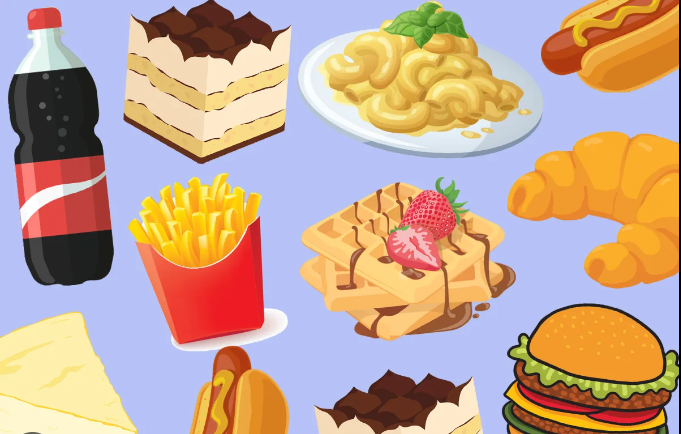

Junk food refers to food that is high in calories, fat, sugar, and salt, but low in nutritional value. Examples of junk food include candy, soda, chips, and fast food burgers and fries.
Consuming too much junk food can lead to obesity, heart disease, diabetes, and other health problems. Additionally, it can contribute to poor nutrition and a lack of energy and concentration.
Here are some recipes for your favorite junk foods that you can make at home: